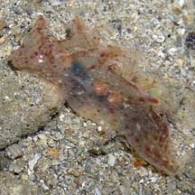
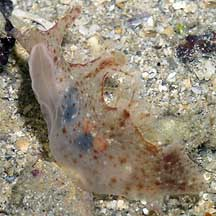
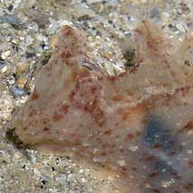

|
|
| nudibranchs text index | photo index |
| Phylum Mollusca > Class Gastropoda > sea slugs > Order Nudibranchia |
| Notobryon
nudibranch Notobryon sp. Family Scyllaeidae updated May 2020 Where seen? Sometimes seen on some of our reefy shores. Features: About 3cm long. It has a pair of 'flaps' (mantle lobes) in the middle of the body which it can use to swim with. There are fluffy structures (dendritic gill-like structures) inside the mantle lobes. The brush-like rhinophores are tiny and are at the tip of a huge rhinophore stalk. What does it eat? This nudibranch eats hydroids. |
|
 Sisters Island, Nov 05 |
 Sisters Island, Nov 05 |
 |
| Notobryon nudibranchs on Singapore shores |
On wildsingapore
flickr
|
| Other sightings on Singapore shores |
Links
References
|